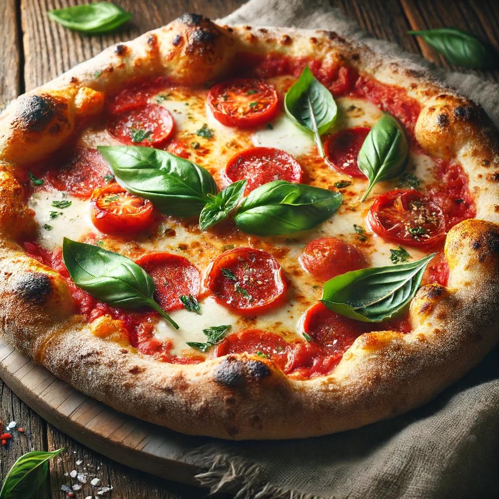

Books at Ponte Vecchio

At Ponte Vecchio, we take pride in offering a delightful culinary experience that combines the best of traditional and contemporary cuisine. Nestled in the picturesque town of Killaloe, our bistro is a haven for food enthusiasts looking to indulge in a variety of delectable dishes, fine wines and rich coffee.
Step into a world of authentic Italian flavors with our meticulously crafted menu. From classic sour-dough pizzas topped with fresh, locally-sourced ingredients, delectable bruschetta to hearty mouth-watering soups serverd with fresh italian bread, every bite promises to transport you to the heart of Italy.